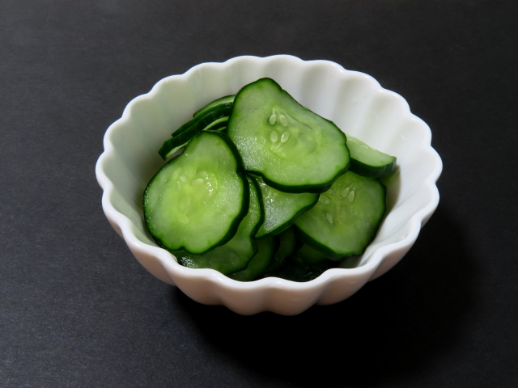

Sunomono(Japanese Cucumber Salad)

Sunomono is a Japanese cuisine using cucumber. It is a sweet and sour salad and usually used as a side dish. It is delicous and very easy to make.
Ingredients
- 2 cucumbers
- 2 tablespoons rice vinegar
- 1 tablespoons sugar
- 2 teaspoons soy sauce
- 1/2 teaspoons salt
Steps
- Slice crosswise into very thin slices.
- Sprinkle salt on sliced cucumbers and wait 5 minutes.
- Discard the water that comes out while lightly pressing down on the cucumber.
- Mix rice vinegar, sugar and soy sauce together.
- Add cucumber slices and stir to coat.